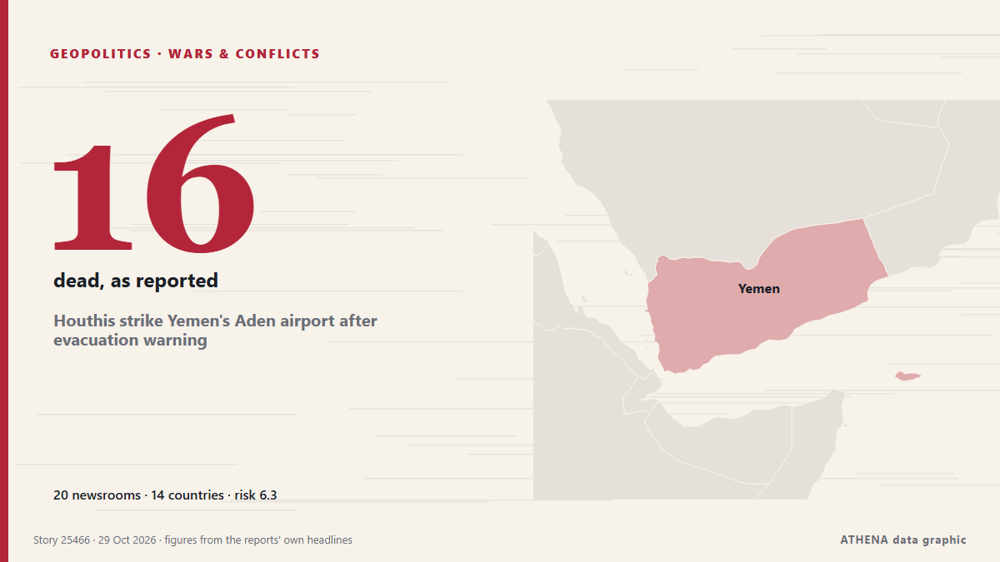

Houthis strike Yemen's Aden airport after evacuation warning

ADEN/DUBAI, Oct 28 - Yemen's Houthis attacked Aden airport on Wednesday, government officials said, after the Iran-aligned group warned people to evacuate the facility as fighting escalated in the… from The Straits Times
Reported independently by 20 outlets in 14 countries since 23 Oct, first by Asharq Al-Awsat (English); coverage is fading. ATHENA rates the risk high (6.3/10), driven mainly by the severity of the harm described and its geographic and sector reach. Confidence is 87% (high), with 20 independent outlets corroborating it and an average source reliability of 79%. Newsrooms by country: Turkey (9), Saudi Arabia (3), China (3). Coverage: 23 Oct to 29 Oct, 148 hours.
Why it matters: The Red Sea and the Bab el-Mandeb strait form the shortest sea route between Asia and Europe, through the Suez Canal. Attacks on merchant ships push carriers to sail around Africa, adding time and cost to world trade.
What changed: 3 new reports from 3 newsrooms in the 24 hours to 29 Oct.
First reported as: Houthis launch attacks on Saudi Arabia and Yemen’s Aden
At a glance
Selected, scored and written by ATHENA's published methodology. No editor intervenes in individual events. How this is produced ›
| 23 Oct 16:51 UTC | 1 |
|---|---|
| 23 Oct 22:51 UTC | 0 |
| 24 Oct 04:51 UTC | 1 |
| 24 Oct 10:51 UTC | 7 |
| 24 Oct 16:51 UTC | 4 |
| 24 Oct 22:51 UTC | 0 |
| 25 Oct 04:51 UTC | 0 |
| 25 Oct 10:51 UTC | 0 |
| 25 Oct 16:51 UTC | 2 |
| 25 Oct 22:51 UTC | 3 |
| 26 Oct 04:51 UTC | 1 |
| 26 Oct 10:51 UTC | 0 |
| 26 Oct 16:51 UTC | 0 |
| 26 Oct 22:51 UTC | 0 |
| 27 Oct 04:51 UTC | 0 |
| 27 Oct 10:51 UTC | 0 |
| 27 Oct 16:51 UTC | 0 |
| 27 Oct 22:51 UTC | 0 |
| 28 Oct 04:51 UTC | 1 |
| 28 Oct 10:51 UTC | 17 |
| 28 Oct 16:51 UTC | 2 |
| 28 Oct 22:51 UTC | 1 |
| 29 Oct 04:51 UTC | 0 |
| 29 Oct 10:51 UTC | 0 |
| 29 Oct 16:51 UTC | 1 |
| 23 Oct 16:56 UTC | 3.8 |
|---|---|
| 24 Oct 07:19 UTC | 0.0 |
| 24 Oct 14:10 UTC | 4.4 |
| 24 Oct 15:08 UTC | 5.8 |
| 24 Oct 15:53 UTC | 5.0 |
| 24 Oct 15:57 UTC | 5.9 |
| 24 Oct 18:28 UTC | 5.5 |
| 24 Oct 21:36 UTC | 5.8 |
| 25 Oct 21:02 UTC | 4.9 |
| 26 Oct 04:04 UTC | 6.3 |
| 28 Oct 16:37 UTC | 6.8 |
| 29 Oct 20:55 UTC | 6.3 |
Why these numbers
Importance
Risk
Confidence
The reporting — who reported it, and when
headline as published · opens the original- Asharq Al-Awsat (English) · Saudi ArabiaAden Governor After Escaping Airport Missile Attack: Hostilities Will Not Deter People of Yemen
- Arab News · Saudi ArabiaAden governor after escaping airport missile attack: hostilities will not deter people of Yemen
- Xinhua (English) — page reader · ChinaUrgent: Ballistic missile attack triggers loud explosions in Yemen's Aden
- Anadolu Agency (English) · TurkeyYemen says Houthis target Aden airport, port and coast guard facilities with ballistic missiles
- Middle East Eye · INTExplosions heard in Yemen's city of Aden
- Middle East Eye · INTYemen's Houthis claim attack on Aden naval base, military camp
- Türkiye Today · TurkeyYemen’s Houthis claim attack on Aden after accusing Saudi Arabia of deadly strikes
- The Korea Times · South KoreaHouthis attack Yemen's Aden, say Saudi strikes kill 16
- The Straits Times · SingaporeIran-allied Houthis say they attacked Saudi oil sites, strikes reported on Yemen’s Aden
- France 24 English · FranceYemen's Houthi rebels claim new attacks on oil facilities and airports across Saudi Arabia
- The New Arab · INTHouthi missiles target Aden airport, coastguard
- Al Jazeera English · QatarHouthis launch attacks on Saudi Arabia and Yemen’s Aden
- Anadolu Agency (English) · TurkeyExplosion rocks Yemen's Aden as suspected Houthi missile lands near military headquarters
- Arab Times · KuwaitExplosion Rocks Yemen’s Aden as Suspected Houthi Missile Lands in Remote Area
- Anadolu Agency (English) · TurkeyYemen accuses Houthis of targeting displacement camp with 3 ballistic missiles
- Mehr News (English) · IranYemen says missile strikes hit Saudi mercenaries
- Middle East Eye · INTHouthis claim missile attacks on Yemen's Aden, Lahij
- Anadolu Agency (English) · TurkeyHouthis claim missile attacks on Saudi forces in Yemen's Aden, Lahij
- Oman Observer · OmanAnsar Allah call for immediate evacuation of Aden airport
- Business Recorder · PakistanYemen's Houthis call for immediate evacuation of Aden airport
- The Straits Times · SingaporeHouthis strike Yemen's Aden airport after evacuation warning
- Xinhua (English) — page reader · ChinaHouthi missile triggers blast near Yemen's Aden airport
- Türkiye Today · TurkeyHouthis claim 11 killed in Saudi strikes, urge Aden airport evacuation
- Mehr News (English) · IranEvacuate Aden Airport immediately: Yemen’s Armed Forces spox
- Al-Monitor · United StatesHouthis call for immediate evacuation of Aden airport as fighting intensifies in Yemen
- Al-Monitor · United StatesHouthis strike Yemen's Aden airport after evacuation warning
- Arab News · Saudi ArabiaHouthis strike Aden airport with two ballistic missiles
- Anadolu Agency (English) · TurkeyHouthis call for evacuation of Yemen’s Aden airport amid escalation
- RTÉ News · IrelandHouthis target Aden after 14 killed in strikes in Yemen
- Xinhua (English) — page reader · ChinaFresh explosions heard near Yemen's Aden airport after Houthi warning
- The National · United Arab EmiratesMiddle East latest: Oil prices decline on fresh diplomatic efforts in Iran war
- Anadolu Agency (English) · TurkeyMissile lands near Yemen's Aden airport following Houthi threats to target facility
- Oman Observer · OmanStrike hits Aden airport after evacuation warning
- The New Arab · INTHouthis say deadly Saudi strikes hit Yemen as they target Aden
- Middle East Eye · INTAir traffic suspended after missiles target Aden airport
- Gulf News · United Arab Emirates2 Houthi missile strikes on Aden Airport spark aviation safety concerns in Yemen
- Anadolu Agency (English) · TurkeyYemen’s Aden Airport resumes operations after temporary suspension following Houthi strike